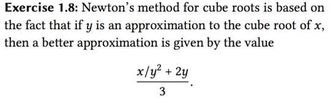
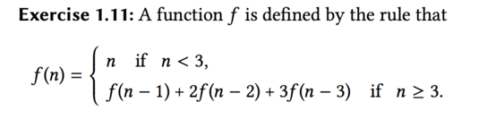
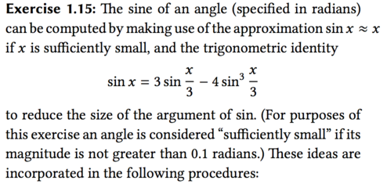
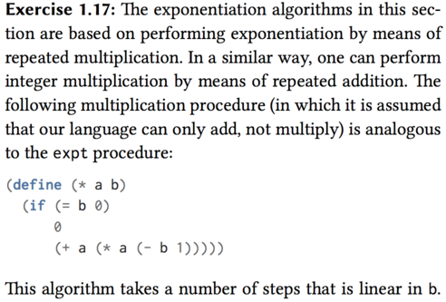

Table of Contents
- Chapter 1
- Exercise 1.1 p26
- Exercise 1.2
- Exercise 1.3
- Exercise 1.4
- Exercise 1.5
- Exercise 1.6
- Exercise 1.7 ✓
- Exercise 1.8
- Exercise 1.9
- Exercise 1.10
- Exercise 1.11 ?
- Exercise 1.12 ?
- Exercise 1.13 ?
- Exercise 1.14 ?
- Exercise 1.15 ✓
- Exercise 1.16 ✓
- Exercise 1.17
- Exercise 1.18
- Exercise 1.19 ?
- Exercise 1.20
- Exercise 1.21
- TODO Exercise 1.22
- Exercise 1.23
- TODO Exercise 1.24
- TODO Exercise 1.25
- Exercise 1.26
- Exercise 1.27
- Exercise 1.28
- Exercise 1.29 ✓
- Exercise 1.30 ✓
- Exercise 1.31
- Exercise 1.32
- Exercise 1.33
- Exercise 1.34
- Exercise 1.35
- Chapter 2
Chapter 1
Exercise 1.1 p26
10
(+ 5 3 4) ===> 12
(- 9 1) ===> 8
3
6
nothing for (define a 3)
nothing
19
#f for a is 3 and b is 4, so they are not equal, return false
4
16
6
16
Exercise 1.2
I don't sure how to handle \(4/5\), need decimal? The answer will be 0, if 4 or 5 is an integer.
(/ (+ 5 4 (- 2 (- 3 (+ 6 (/ 4 5))))) (* 3 (- 6 2) (- 2 7)))
Exercise 1.3
Find a more simple way to do this.
(define (sum a b c)
(define (square-two a b)
(+ (* a a) (* b b)))
(cond ((and (< a b) (< a c)) (square-two b c))
((and (< b a) (< b c)) (square-two a c))
(else (square-two a b))))
Exercise 1.4
The function of a-plus-abs-b accept 2 parameters of a and b. First, it will check if b is greater than 0 or not. If b > 0, the local procedure of "(if (> b 0) + -)" will return +, or it will return -.
So, if b > 0, the result is (+ a b) and if b <= 0, the result is (- a b). In the end, this procedure will return a plus the absolute value of b. Using infix notation is "a + abs(b)".
Exercise 1.5
If the interpreter use applicative-order evaluation, we can't get any of result. Because, it will first do the step of (p) and then return the result. But, I can't get the result.
If the iterpreter use another way, we will get the result immediately. In the Normal order, (p) will not be evaluated until it is needed by some primitive operation and thus this will return 0
So, the interpreter use the first one.
(Need reference to others answer, I don't really understand this)
Exercise 1.6
If you want to understand this question, you must know the difference between normal-order and applicative order.
In this case, it is a normal order evaluation. So, you will get an error that stack level is too deep. You can see this.
Exercise 1.7 ✓
The good-enough? test used in computing square roots will not be very effective for finding the square roots of very small numbers.
An alternative strategy for implementing good-enough? is to watch how guess changes from one iteration to the next and to stop when the change is a very small fraction of the guess.
(define (improve guess x)
(average guess (/ x guess)))
;; The original version
(define (good-enough? guess x)
(< (abs (- (square guess) x)) 0.001))
;; The new version
(define (good-enough? guess x)
(< (abs (- (improve guess x) guess)) (* 1.0e-20))
(define (sqrt-iter guess x))
Exercise 1.8
The cube root

(define (improve guess x)
(/ (+ (* 2 y) (/ x (* y y))) 3))
(define (cube-root x)
(cube-iter guess x))
(define (cube-iter guess x)
(if (good-enough? guess x)
guess
(cube-iter (improve guess x) x)))
(define (good-enough? guess x)
(< (abs (- (* guess guess guess) x)) 0.01))
How to the \(N_th\) root, visit here.
Exercise 1.9
(define (+ a b)
(if (= a 0) b (inc (+ (dec a) b))))
(+ 4 5) (inc (+ 3 5)) (inc (inc (+ 2 5))) (inc (inc (inc (+ 1 5)))) (inc (inc (inc (inc (+ 0 5))))) (inc (inc (inc (inc 5)))) (inc (inc (inc 6))) (inc (inc 7)) (inc 8) 9
And this procedure:
(define (+ a b)
(if (= a 0) b (+ (dec a) (inc b))))
(+ 4 5) (+ 3 6) (+ 2 7) (+ 1 8) (+ 0 9)
So, the first one is recursive and the second one is iterative.
Exercise 1.10
(A 1 10) = (A 0 (A 1 9))= 1024
65536
65536
see this.
Exercise 1.11 ?
This is the definition of \(f(n)\):

;; recursive
(define (f n)
(if (< n 3)
n
(+ (f (- n 1)) (* 2 (f (- n 2))) (* 3 (f (- n 3))))))
And the iterative one is: ???
You can use this transform:
\begin{align} a + 2b + 3c & \rightarrow a \\ a & \rightarrow b \\ b & \rightarrow c \end{align}(define (f n)
(f-iter 2 1 0 n n))
(define (f-iter a b c count n)
(if (= count 0)
c
(f-iter (+ (* 2 b)
a
(* 3 c))
a
b
(- count 1)
n)))
Exercise 1.12 ?
Pascal’s triangle.
I can't understand this problem.

; rows
; 1 | 1
; 2 | 1 1
; 3 | 1 2 1
; 4 | 1 3 3 1
; 5 | 1 4 6 4 1
; --------------------
; cols 1 2 3 4 5
;; so , we can define the pascal's triangle with:
(define (pascal row col)
(if (or (= 1 col) (= row col))
1
(+ (pascal (- row 1) (- col 1))
(pascal (- row 1) col))))
Exercise 1.13 ?
Use mathematical induction to prove …
see here.
Exercise 1.14 ?
look up the page of 51 and 56.
Exercise 1.15 ✓
5 times to evaluate 12.15?

(define (cube x) (* x x x))
(define (p x) (- (* 3 x) (* 4 (cube x)))) (define (sine angle)
(if (not (> (abs angle) 0.1)) angle
(p (sine (/ angle 3.0)))))
(define pi 3.1415926)
(sine (/ pi 2))
solutions:
- a. 5 times
- the order of growth in space is O(n), steps also is O(n). Wrong
Because we got number 5 from taking a logarithm of angle a, so The order is O(log a).
Exercise 1.16 ✓
(define (fast-expt2 b n)
(fast-expt-iter 1 b n))
(define (fast-expt-iter a b n)
(cond ((= n 0) a)
(even? n) (fast-expt-iter a (square b) (/ n 2))
(else (fast-expt-iter (* a b) b (- n 1)))))
(define (square x)
(* x x))
space: O(1), time: O(log n)
Exercise 1.17

(define (mult a b)
(define (double x)
(+ x x))
(define (halve x)
(/ x 2))
(cond ((= b 0) a)
((even? b) (mult (double a) (halve b)))
(else (+ a (mult a (- b 1))))))
Exercise 1.18
(define (fast-mult a b)
(define (double x)
(+ x x))
(define (halve x)
(/ x 2))
(define (mult-iter a counter sum)
(cond ((= counter 0)
sum)
((even? counter)
(mult-iter (double a) (halve counter) sum))
(else
(mult-iter a (- counter 1) (+ sum a)))))
(mult-iter a b 0))
Exercise 1.19 ?
(define (fib n)
(fit-iter 1 0 0 1 n))
(define (fib-iter a b p q count)
(conf ((= count 0) b)
((even? count)
(fib-iter a
b
(+ (square p) (square q))
(+ (* 2 p q) (square q))
(/ count 2)))
(else (fib-iter (+ (* b q) (* a q) (*a p))
(+ (* b p) (* a q))
p
q
(- count 1)))))
Want get more detail, visit here.
Exercise 1.20
Exercise 1.21
(define (smallest-divisor n)
(find-divisor n 2))
(define (find-divisor n test-divisor)
(cond ((> (square test-divisor) n) n)
((divides? test-divisor n) test-divisor)
(else (find-divisor n (+ test-divisor 1)))))
(define (divides? a b)
(= (remainder b a) 0))
TODO Exercise 1.22
Exercise 1.23
Instead of using (+ test-divisor 1), we change it to (next test-divisor)
(define (find-divisor n test-divisor)
(cond ((> (square test-divisor) n) n)
((divides? test-divisor n) test-divisor)
(else (find-divisor n (next test-divisor)))))
(define (next input)
(if (= input 2)
3
(+ 2 input)))
TODO Exercise 1.24
TODO Exercise 1.25
Exercise 1.26
The multiplication expression evaluates expmod twice, resulting in binary process tree, which grows exponentially as O(2n). This cancels the advantage we had with O(log n) algorithm, because 2(log n) = n.
Exercise 1.27
Exercise 1.28
Exercise 1.29 ✓
(define (square x)
(* x x))
(define (cube x)
(* x x x))
(define (sum term a next b)
(if (> a b)
0
(+ (term a)
(sum term (next a) next b))))
(define (simpson-integral f a b n)
(define (add-h x) (+ x h))
(define h (/ (- b a)))
(define (summand x)
(define multiplier
(cond ((or (= x a) (= x b)) 1)
((odd? (round (/ (- x a) h))))
(else 2)))
(* multiplier (f x)))
(* (/ h 3) (sum summand a add-h b)))
Exercise 1.30 ✓
(define (sum term a next b)
(define (iter a result)
(if (> a b)
result
(iter (next a) (+ (term a) result))))
(iter a 0))
(define (identity x) x)
(define (inc x) (+ 1 x))
(sum identity 1 inc 10)
Exercise 1.31
(define (product term a next b)
(if (> a b)
1
(* (term a)
(product term (next a) next b))))
;; iterative product
(define (product term a next b)
(define (iter a result)
(if (> a b)
result
(iter (next a) (* (term a) result))))
(iter a 1))
(define (factorial n)
(if (= n 0)
1
(* n (factorial (- n 1)))))
(define (factorial n)
(product identify 1 inc n))
;; pi/4
(define quarter-pi
(lambda (max-factor)
(define add2 (lambda (x) (+ x 2)))
(/ (* 2 (product square 4 add2 (- max-factor 2) max-factor))
(product square 3 add2 (- max-factor 1)))))
(define pi-approx
(lambda (max-factor)
(* 4.0 (quarter-pi max-factor))))
Exercise 1.32
(define (accumulate combiner null-value term a next b)
(if (> a b)
null-value
(combiner (term a)
(accumulate combiner null-value term (next a) next b))))
(define (accumulate combiner null-value term a next b)
(define (iter a result)
(if (> a b)
result
(iter (next a) (combiner (iterm a) result))))
(iter a null-value))
(define (sum term a next b)
(accumulate + 0 term a next b))
(define (product term a next b)
(accumulate * 1 term a next b))
Exercise 1.33
(define (filtered-accumulate filter
combiner
null-value
term
a
next
b)
(define (iter a result)
(if (> a b)
result
(iter (next a)
(combiner (if (filter a)
(term a)
null-value)
result))))
(iter a null-value))
(+ (filtered-accumulate odd? + 0 identity 1 inc 10)
(filtered-accumulate even? + 0 identity 1 inc 10)) ; 55
Exercise 1.34
This will give a wrong answer. (f f) = (f 2) = (2 2)
Because 2 is not an operator, so the iterpreter will throw an error.
Exercise 1.35
Look at this.
(define tolerance 0.00001)
(define (fixed-point f first-guess)
(define (close-enough? v1 v2)
(< (abs (- v1 v2)) tolerance))
(define (try guess)
(let ((next (f guess)))
(if (close-enough? guess next)
next
(try next))))
(try first-guess))
(fixed-point (lambda (x) (+ 1 (/ 1 x))))
Chapter 2
Exercise 2.1
(define (gcd a b)
(if (= b 0)
a
(gcd b (remainder a b))))
(define (print-rat x)
(display (numer x))
(display "/")
(display (denom x))
(newline))
(define (numer x) (car x))
(define (denom x) (cdr x))
(define (make-rat n d)
(let ((g (abs (gcd n d))))
(if (< d 0)
(cons (/ (- n) g) (/ (- d) g))
(cons (/ n g) (/ d g)))))
(print-rat (make-rat 12 -15))
(print-rat (make-rat -4 -18))
(print-rat (make-rat -18 15))
(print-rat (make-rat 3 5)
Exercise 2.2
(define (midpoint-segment s)
(let* ((start (start-segment s))
(end (end-segment s))
(x1 (x-point start))
(y1 (y-point start))
(x2 (x-point end))
(y2 (y-point end)))
(make-point (average x1 x2)
(average y1 y2))))